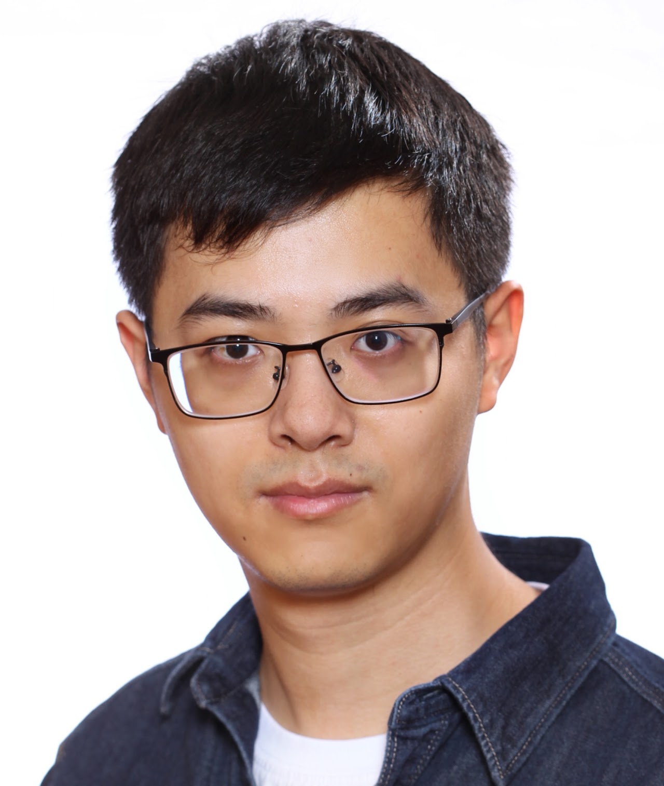

DATE 2026
SecIC3: Customizing IC3 for Hardware Security Verification
Qinhan Tan, Akash Gaonkar, Yu-Wei Fan, Aarti Gupta, Sharad Malik
Design, Automation and Test in Europe (DATE), 2026
★ Best Paper Candidate

Formal Verification Engineer
Apple
ABOUT ME
I am a formal verification engineer at Apple. I received my Ph.D. in Electrical and Computer Engineering from Princeton University in 2025, advised by Prof. Sharad Malik. Before that, I completed my undergraduate studies at Zhejiang University.
My research focuses on hardware formal verification and hardware security. I use mathematical logic to rigorously reason about the functionality and security of systems.
My past work spans secure cache design, security verification of hardware enclaves, formal detection of transient execution vulnerabilities in processors, and functional subsetting of hardware accelerators.
* denotes co-first authors.
Qinhan Tan, Akash Gaonkar, Yu-Wei Fan, Aarti Gupta, Sharad Malik
Design, Automation and Test in Europe (DATE), 2026
★ Best Paper Candidate
Qinhan Tan*, Yuheng Yang*, Thomas Bourgeat, Sharad Malik, Mengjia Yan
Architectural Support for Programming Languages and Operating Systems (ASPLOS), 2025
Qinhan Tan*, Yonathan Fisseha*, Shibo Chen*, Lauren Biernacki, Jean-Baptiste Jeannin, Sharad Malik, Todd Austin
ACM Conference on Computer and Communications Security (CCS), 2023
★ Distinguished Paper Award
Qinhan Tan, Aarti Gupta, Sharad Malik
International Conference on Computer-Aided Design (ICCAD), 2022
Qinhan Tan*, Zhihua Zeng*, Kai Bu, Kui Ren
Network and Distributed System Security Symposium (NDSS), 2020
Princeton University
Fall 2021, Fall 2022, Fall 2023
Spring 2023, Spring 2025